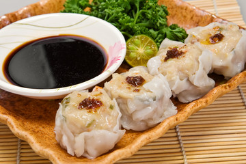

SIOMAI

Balanced flavor that shuffles between salty and tangy
"The siomai or dumpling wrapper is usually a square or circle
of dough rolled out thinly and then frozen to maintain its pliability
and prevent it from drying out."
INGREDIENTS:
- 1 kilo pork, use ground pork
- 1/3 cup jicama (singkamas), minced
- 1/3 cups carrot, minced
- 1 large onion
- spring onions, chopped
- 1 egg
- 3 tablespoons sesame oil
- 5 tablespoons oyster sauce
- 1 teaspoon pepper
- 1 teaspoon salt
- small siomai wrapper
- soy sauce
- calamansi
- sesame oil
- chili paste
How to Make Siomai?
STEPS ON HOW TO MAKE SIOMAI:
- Mix all the ingredients for the filling in a large bowl.
- Spoon 1 tablespoon of mixture into each wrapper. Fold and seal.
- Brush steamer with oil and boil water. When the water gets to a rolling boil,
arrange the siomai in the steamer and steam for 15 to 20 minutes.
- Serve with dipping sauce.